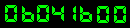

<-Bcc;
*;{ ...
{ #00ff00;kill(int;s1)>>;file);
w3 = exe->item;Goods*(Attach.)
alpha = exe->(TM)GOODIES;
act_probe = X->status.your_XP_adress;
act_layer = int;s2 = (x,$%&"#_LAYER(i++));
act_Demo = Xact_layer->list_of_files->next;
for(i=0;i,act_layer->(MS++GO;TO;DIE(=));
act_probe = listt->zxcvb.local_XP_adress;
act_layer = GO/DEMO.sit(EXE-XXXX_LAYER(exe));
act_Demo = EXE_#layer->list_files->s1+=;xlan,0
for(i=0;i,exe->number_of_files;i++)
{
exe_#000000 = exec_#file->s2+=;b(off++));
}
